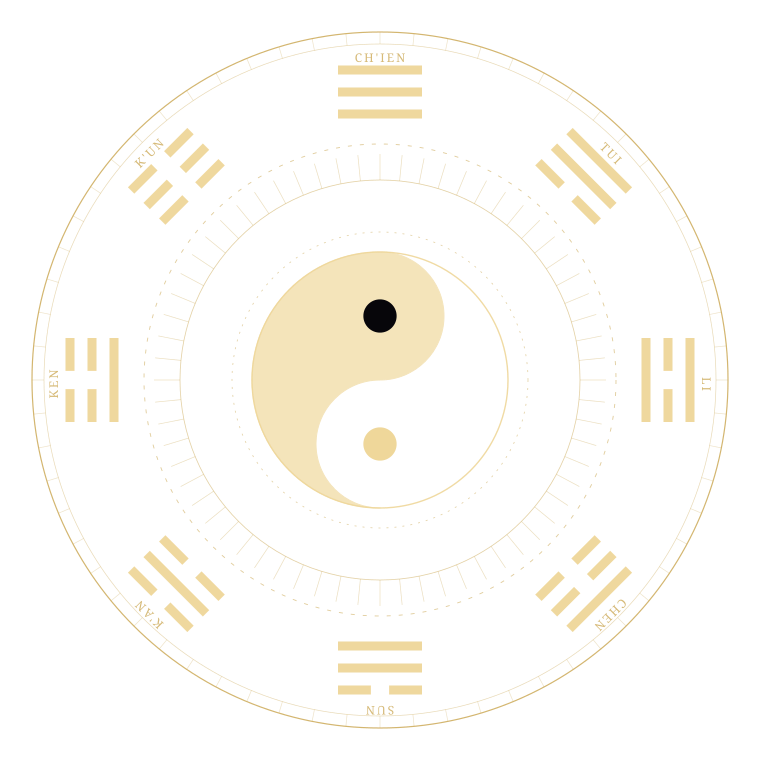

The Book of Changes
A Chinese oracle of the Western Zhou, layered with Confucian commentary for two thousand years, carried into German by a missionary who had learned to read it as wisdom rather than superstition, and into English by Cary Baynes with a foreword by Jung.
The book's premise is that situations, not things, are the units of reality, and that a situation has a shape which can be stated. Each of the sixty four hexagrams is six lines, each line either firm (yang) or yielding (yin), read from the bottom upward, because the bottom line is the one that entered the situation first.
Wilhelm's translation choices are themselves an interpretation. He rendered the oracle's gnomic Chinese into a stately German that made it sound like Goethe reading Lao Tzu, and he leaned on his teacher Lao Nai-hsuan for the Confucian commentary tradition. The result is the version that shaped Jung, Hesse, Cage, Dick and most Western readers since. Purists prefer the older strata. Both are on the shelf in the library.
Three lines, the alphabet of the book
| Trigram | Name | Image | Attribute | Family |
|---|---|---|---|---|
| Solid, solid, solid | Ch'ien | Heaven | Strength, initiative, the untiring | Father |
| Broken, broken, broken | K'un | Earth | Devotion, capacity, the yielding that carries | Mother |
| Solid below, two broken | Chen | Thunder | Arousing, shock, the sudden start | Eldest son |
| Broken between solids | K'an | Water | Danger, depth, what cannot be avoided | Second son |
| Two broken, solid above | Ken | Mountain | Stillness, limit, the resting place | Youngest son |
| Broken below, two solid | Sun | Wind, wood | Gentle penetration, gradual influence | Eldest daughter |
| Solid between broken | Li | Flame | Clarity, adherence, what depends on fuel | Second daughter |
| Two solid, broken above | Tui | Lake | Joy, openness, the mouth | Youngest daughter |
Every hexagram is two trigrams, one above the other, and much of the traditional commentary is simply a reading of that pair: water over fire is one story, fire over water another.
Cast by the three coin method
Six times, three coins are thrown. Heads counts three, tails counts two, so each line totals six, seven, eight or nine. Seven is a young firm line and eight a young yielding line: both are stable. Six and nine are old lines, at the end of their strength, and they change into their opposite. That is how the book gives you two hexagrams: the situation as it stands, and the situation it is turning into.
The coins are not thrown by a random number generator. Each line is decided by your own hand — the timing and path of the movement while you hold, and the accelerometer too if you allow it. Nothing is stored and nothing is sent anywhere. Write the question first; it locks when the first line falls.
Ask about a situation you are in, not for a yes or no. Do not ask what you have already decided.
Press and hold, move your hand while you hold, and let go to throw. Six throws, one per line, from the bottom upward.
Traditional courtesy, kept by Wilhelm: do not ask the same question twice to get a better answer, and do not ask what you have already decided. The book is a mirror for deliberation, not a permission slip.
The whole book, in order
King Wen order, with Wilhelm's English names. Select any hexagram to read its judgment, image and counsel. The judgment and image texts here are close paraphrases rather than translations.
Why a psychologist vouched for an oracle
Jung wrote the foreword to the Baynes translation in 1949, at seventy four, and admitted from the first paragraph that a scientific reader would find the whole business intolerable. His argument was not that the book predicts. It was that a chance figure, met with a serious question, reliably produces a meaningful confrontation with one's own situation, and that this is worth investigating rather than dismissing.
He called the principle at work synchronicity, and he was careful to say he could not prove it. See room I.
How to sit with an answer
- Write the question down before casting. Half the value is in the wording.
- Read the judgment first, then the image, then the counsel. Do not skip to the part you like.
- Note which lines moved. A single moving line often carries the whole message.
- Record the cast and the date, and read it again a month later. This is the discipline of the magical record, applied to divination. See the rites.